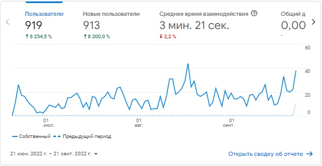
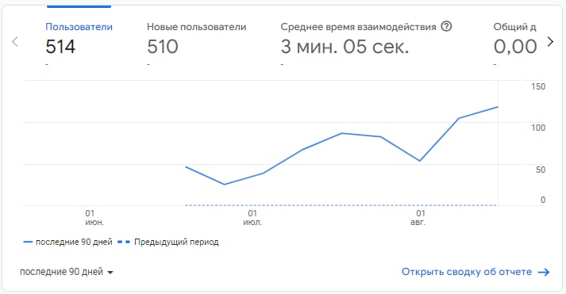
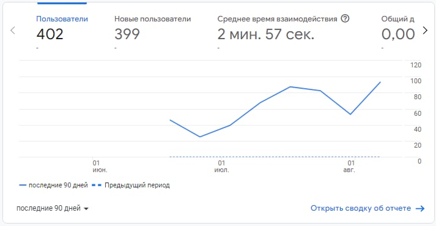

Сайту исполнилось ровно 3 месяца! 22 июня, я опубликовал пост о том, что сайт готов, и на нем мало что было, но теперь, это не просто сайт с сборками, и прям отдельный каталог, или библиотека, где можно найти все что угодно простому человеку, начиная от сборок без проверок, заканчивая ключами от Windows, и образами Windows 3.11!
Давайте сделаем до конца сентября рекорд - 1000 Человек!

Дата: 21.09.2022
Произошла переобувочка, и в первый же день релиза Windows 11 22H2, я решил сделать сборку без проверки, чтобы у вас не было проблем с обновлением!
Думаю что "Новости" я обновлять буду не часто, а только по успехам сайта что то буду писать, так как это не особо удобно, и легче в моем Telegram канале "Сборки от Аддерли", на который ссылка есть ниже, и много где на сайте!
Дата: 30.08.2022
Прощай лето! Мне пора заниматся учебой, так как это мой последний клас. Благодаря России, этот финал мне придется учится дистанционно, и из-за этого время на сборки я выделять не буду. Все сборки актуальны, и сборку 22H2 я делать не планирую, так как отключение проверки там работать не будет.
Всем спасибо за то что используете мои сборки, делитесь с друзьями сайтом и соц сетями. Слава Украине!
Дата: 27.08.2022
На сайте уже больше 600 человек! Я очень благодарен каждому пользователю, который посещает сайт, чтобы что нибудь бесплатно приобрести, но так же, меня можно поддержать, сайт украинский, и если вы из россии, то включите впн! Спасибо каждому заранее, кто поддержит парой гривен!
510 человек! Я не успел заскринить 500 к сожалению, я вам очень благодарен!

Дата: 15.08.2022
Новая версия сборки - Windows 11 V3 21H2 by Adderly! Во всех сборках я обновил набор программ, а так же больше не выключал Internet Explorer и Media Player!
Скорее всего, больше обновлений сборок не будет ближайший месяц, так как сборки абсолютно не нуждаются в обновлениях, так как выбор программ уже огромный, и все уже интегрировано!
Из всех сборок которые я еще не обновил, остались только: Windows 8.1 Lite x32 Windows 10 1607!
Эти сборки я оставил в последнюю очередь, потому что это в принципе самый не важные сборки за все что я делал, так как я не видел чтобы их кто то использовал, обычно популярностью пользуются мои сборки 10 21H2 и 11 21H2.
Возможно я обновлю 10 1607, и 8.1 Lite, но вряд-ли.
Так что, я все следующее время, буду в основном обновлять только сайт, чтобы было его смотреть все так же интересно как и раньше, спасибо всем за время, и за то что вы используете мои сборки!
Дата: 14.08.2022
Я наконец закончил свою идею с Windows Mini, хоть и не таким хорошим концом, так как 8.1 весит больше 2 ГБ, так же не вышла одна сборка.
Спустя полтора месяца я все таки смог сделать новые версии Windows 10 21H2, и 1709! Проблема уже решена, и теперь её можно ставить абсолютно спокойно, и мне за сборки десяток больше не стыдно! :D
Эмоции были очень хорошии, после того как я почувствовал победу над кривой десяткой!
Остались только: Windows 8.0 V2 by Adderly и Windows 11 V3 by Adderly!
И наконец можно будет уйти в так называемый "отпук", хотя к сожалению это не отпуск, а 9 класс :(
Дата: 13.08.2022
400 Человек!
И статистика сайта взлетела до небес! За 11 и 12 августа пришло 30 новых человек!
Такой статистики не было давно, хоть и на этой неделе я про сайт говорил только на своем YouTube канале.
Сайт я создал 22 июня, благодаря своему другу igroman255, он мне подсказал как начать.
А еще в далеком мае, я делал совсем стыдные сборки (которые кстати вверху моего телеграм канала), и даже не думал что смогу зайти так далеко!
Спасибо всем за то что вы пользуетесь моими сборками, и я бы хотел попросить вас рассказать о моих сборках своим друзьям или товарищам, давайте до конца лета 500 пользователей наберем :)

Дата: 11.08.2022
Всем снова привет! Я решил попробовать открыть раздачу торрента Windows 11, но к сожалению у меня проблема с тем, что именно я раздавать не могу, и нужно чтобы это делал кто-то другой.
Дата: 10.08.2022
Здравствуйте! Я решил открыть такую вкладку, как "Новости", Чтобы писать какое будет обновление сайта, и какие сборки будут выходить.
Я планирую сделать Windows 8.1 V5, Windows 7 V4, и 8.0 V2, в которых я обновлю выбор браузеров, и других программ, по просьбе людей.
Windows 10 и 11, я планирую больше не заниматься, так как Windows 11 довольно трудно у меня собиралась, и на это уходило слишком много времени, а Windows 10 просто для меня не любимая система, и сборки которые я сделал уже идеально готовы для использования, единственное главное правило - Нужно ставить с интернетом.
А еще, в моих планах сделать Windows 8.1 Mini, и Windows 8.0 Mini, которые будут весить меньше 5 GB, и они будут юзабельны.
Всем спасибо за потраченное время, и за использование моих сборок!
Новости доступны только на ПК, ноутбуках, и планшетах.
Новости Аддерли
Дата: 22.09.2022
Сайту исполнилось ровно 3 месяца! 22 июня, я опубликовал пост о том, что сайт готов, и на нем мало что было, но теперь, это не просто сайт с сборками, и прям отдельный каталог, или библиотека, где можно найти все что угодно простому человеку, начиная от сборок без проверок, заканчивая ключами от Windows, и образами Windows 3.11!
Давайте сделаем до конца сентября рекорд - 1000 Человек!
Дата: 21.09.2022
Произошла переобувочка, и в первый же день релиза Windows 11 22H2, я решил сделать сборку без проверки, чтобы у вас не было проблем с обновлением!
Думаю что "Новости" я обновлять буду не часто, а только по успехам сайта что то буду писать, так как это не особо удобно, и легче в моем Telegram канале "Сборки от Аддерли", на который ссылка есть ниже, и много где на сайте!
Дата: 30.08.2022
Прощай лето! Мне пора заниматся учебой, так как это мой последний клас. Благодаря России, этот финал мне придется учится дистанционно, и из-за этого время на сборки я выделять не буду. Все сборки актуальны, и сборку 22H2 я делать не планирую, так как отключение проверки там работать не будет.
Всем спасибо за то что используете мои сборки, делитесь с друзьями сайтом и соц сетями. Слава Украине!